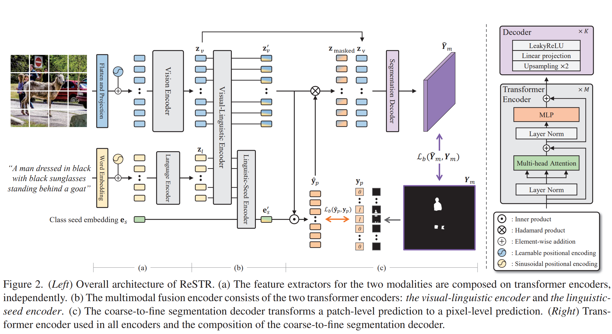
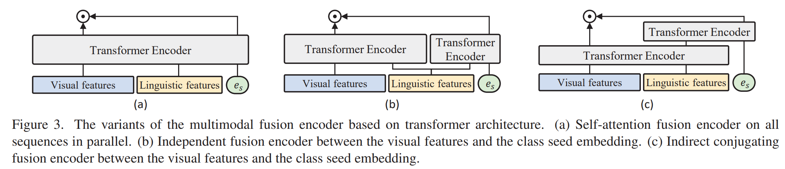
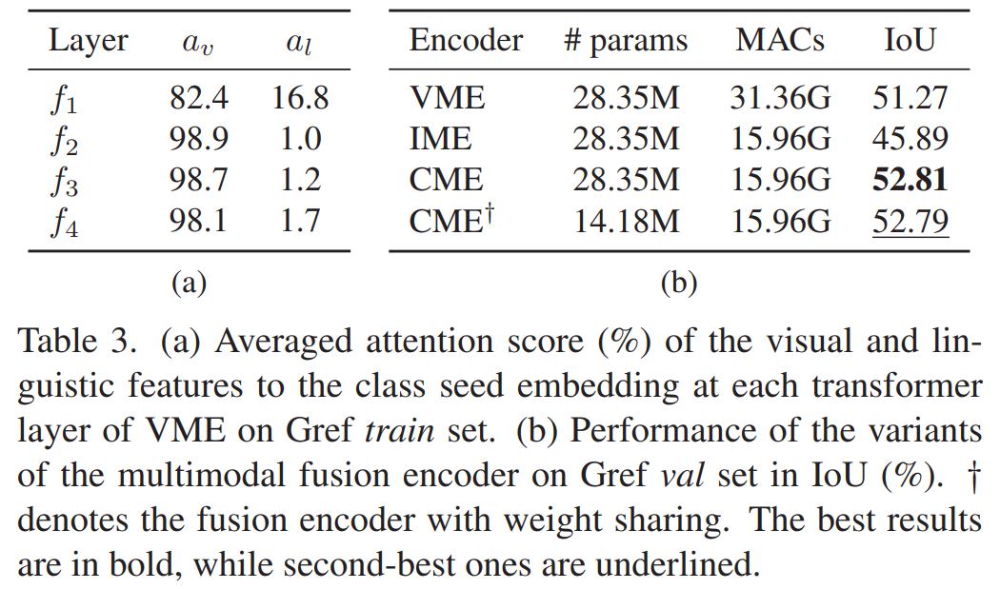

CLIP x 语义分割
记录一下笔者最近调研的几篇把CLIP等多模态预训练模型用在语义分割任务上的文章。
CLIP简单回顾
CLIP1
全监督
DenseCLIP:
DenseCLIP2
弱监督
Referring
Referring Image Segmentation 的任务是，用用户感兴趣的对象的描述作为输出，输出是满足条件的对象的分割mask。与全监督语义分割相比，每个GT mask对应的类别标签换成了一个描述的句子（比如“在橘黄色车后面的白车”），这些句子不像类别，是开放集合。
ReSTR：使用Transformer融合多模态特征
ReSTRa是CVPR'2022上的一篇文章，主要完成Referring Image Segmentation任务，提出了一种基于Transformer的多模态特征融合的结构，并从粗（patch-level）到细（pixel-level）地解码预测mask。这篇文章没有使用CLIP，也还没有公开代码，但是一些解决问题的方法值得学习。

Vision Encoder使用在ImageNet-21K上与训练的ViT-B-16，Language Encoder使用预训练的GloVe模型。多模态Encoder使用与Vision Encoder一样的结构。而Decoder有4层（简单的线性投影+非线性激活），因为patch_size=16，每层decoder上采样2倍。
为什么要引入 class seed embedding？ \(\mathbf{e}_s\in \mathbb{R}^{1\times D}\) 是随机初始化的可学习参数，经过Linguistic-Seed Model，作为一种文本全局信息的聚合，(在上图中，它应该抽象的表示出目标人类对象的文本语义)，之后与融合了文本信息的图像特征 \(\mathbf{z}_v'\) 内积、归一化，并通过sigmoid，得到全局文本语义在各个patch上的注意力，而这可以作为一种patch-level的预测mask。这个mask本身还能与 \(\mathbf{z}_v'\)进行广播逐点乘法，也就是只保留与全局语义有关的patch上的语义信息，接着再与视觉特征concat，送入简单的decoder中，得到精细的分割结果。
为什么用了Visual-Linguistic和Linguistic-Seed两种编码器以及这样的连接方式来获得全局语义信息，以及融合文本信息的视觉特征？

上图是作者尝试过的三种多模态编码方式，VME是最直接的做法，但是作者发现，可能是因为图像patch个数 \(N_v = 900\)（意味着输入是480x480的分辨率），而句子长度上限为 \(N_l = 20\)，两中模态的token数量差距过大，使得VME的多模态编码器总是会偏向视觉信息，下表(a)展示了在VME的4个Transformer块中，\(\mathbf e_s\) 的注意力几乎都关注在视觉特征上。因此希望 \(\mathbf{e}_s\) 不要与视觉特征计算注意力。而IME的效果又差了很多，因此设计了CME，\(\mathbf{e}_s\) 与融合了视觉信息的文本特征计算注意力。
\(a_v\) 和 \(a_l\) 分别是将 \(N_v\) 和 \(N_l\) 个注意力相加的结果，所以就算视觉特征的平均注意力与文本特征的平均注意力一样，总比例也是是90:2，第 2-4 个块基本都符合这个比例

CRIS：使用CLIP引导的Referring Image Segmentation
CRISb使用CLIP的Vision编码器（ResNet50/101）和Text编码器，使用如下3处改动将文本特征与像素级的图像特征进行融合解码：
- 设计了Cross-Modal Neck，将全局文本特征 \(F_s\) 与多层图像特征进行融合，并融合了coordinate特征，得到了16倍下采样的特征图 \(F_v \in\mathbb{R}^{N\times C}, N = \frac{H}{16}\times\frac{W}{16}\)；
- 设计了Vision Language Decoder，将图像特征 \(F_v\) 和 文本特征 \(F_t \in\mathbf{L\times C}\)
分别加上固定的sine位置编码，接着将 \(F_v\) 送入带残差连接的MHSA得到 \(F_v'\)，再让 \(F_v'\) 作为 query，\(F_t\) 作为 key 和 value，计算MHCA，得到
\(F_c' \in \mathbb{R}^{N\times
C}\)，之to后再送入带有残差连接的MLP。这样的
MHSA-MHCA-FFN作为Decoder的一个Transformer块，共n块。最后得到的多模态特征 \(F_c\) 即可用于最后的分割。 - 使用Text-to-Pixel的对比损失作为额外的损失函数。将 \(F_c'\) (\(F_c\) 上采样4倍，即原图的4倍下采样大小) 和 \(F_s\) 线性投影到同样的空间后，计算内积的sigmoid作为相似度，对于在标签内的位置，将相似度度拟合到1，否则将相似度拟合到0。（使用CE Loss）
在消融实验部分，作者以不使用Vision Language Decoder、不使用Text-to-Pixel损失模型作为baseline，在3个基准数据集上证明了这两个模块的有效性，并且Decoder的层数 \(n = 3\)。
根据论文中结果，CRIS比前文讲述ReSTR性能更好。
代码已经开源在CRIS.pytorch。但是作者目前还没有给出pretrained model，不过issue中有一个别人训练好的模型。
Q&A
为什么不直接用CLIP的vision分支直接在语义分割数据集上linear probe？
CLIP的训练方式与Dense任务的“鸿沟”？